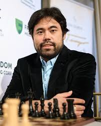

Hikaru Nakamura - em japonês, 中村光 Nakamura Hikaru (Hirakata, 9 de dezembro de 1987) é um jogador de xadrez e streamer norte-americano, campeão nacional em 2005, 2009, 2012, 2015 e 2019,[1] foi participante do Campeonato Mundial de Xadrez de 2004 (FIDE), o qual foi eliminado no quarto round por Michael Adams.[2] Nakamura participa regularmente da Olimpíada de xadrez pelos Estados Unidos, tendo conquistado a medalha de bronze em 2006 e 2008. Início da vida Hikaru Nakamura nasceu em Hirakata, província de Osaka, Japão, filho de uma mãe americana, Carolyn Merrow Nakamura, uma musicista clássica e professora de rede pública aposentada e um pai japonês, Shuichi Nakamura.[3][4] Nakamura tem um irmão mais velho, Asuka.[5] Quando ele tinha dois anos, sua família se mudou para os Estados Unidos, e, um ano depois, seus pais se divorciaram.[6] Ele começou a jogar xadrez aos sete anos e foi ensinado pelo seu padrasto cingalês, Mestre da FIDE e autor de livros sobre xadrez Sunil Weeramantry.[7] Weeramantry começou a dar aulas para os irmãos Nakamura, após ter visto que Asuka Nakamura havia vencido o campeonato nacional do jardim de infância em 1992, tal fato o levou a desenvolver um relacionamento com mãe dos irmãos.[5] Prodígio do xadrez Aos 10 anos, ele se tornou o estadunidense mais jovem a derrotar um Mestre Internacional quando derrotou Jay Bonin no Marshall Chess Club.[5][8] Também aos dez, Nakamura se tornou o enxadrista mais jovem a conseguir o título de Mestre Nacional pela Federação Estadunidense de Xadrez, quebrando o recorde antes conquistado por Vinay Bhat (Nakamura manteve seu recorde até 2008 quando Nicholas Nip conseguiu o título de Mestre Nacional com 9 anos e 11 meses). Em 1999, Nakamura ganhou o prêmio Laura Aspis Prize, que premiava anualmente o enxadrista com maior rating pela USCF (Federação Estadunidense de Xadrez) com abaixo de 13 anos. Em 2003, aos 15 anos e 79 dias, Nakamura se consagrou como um prodígio do xadrez, se tornando o estadunidense mais jovem a receber o título de Grande Mestre, quebrando o recorde de Bobby Fischer por três meses .[9][10] (O recorde de Nakamura foi ultrapassado em sequência por Fabiano Caruana em 2007, seguido por Ray Robson em 2009, e por último Samuel Sevian em 2014.)